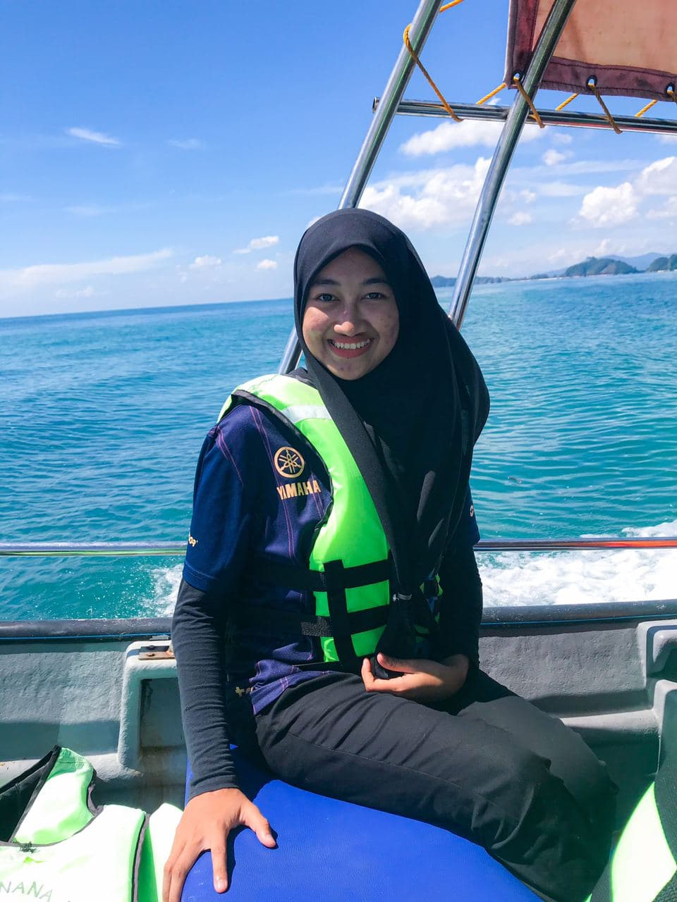

EXPERIENCE
Grow With The Flow
HOME
BIODATA
EXPERIENCE
EDUCATION
MY FAMILY
MY GALLERY
CONTACT ME
This is my first experienced went to the Pulau Rhu at Bukit Kluang, Terengganu with my aunties and cousins. Pulau Rhu is not too far
from Bukit Kluang. People started noticed the island is because the island have such a beautiful crystal clear water.
The boat fee from Bukit Kluang to Pulau Rhu is affordable around RM15-RM20 only. It was such a great memories
went to Pulau Rhu with my cousins. We had a chance to "mandi-manda" at the beach before we went back to Bukit Kluang. These are the photos
of my cousins and I when we were there. We went to Pulau Rhu by boat.
